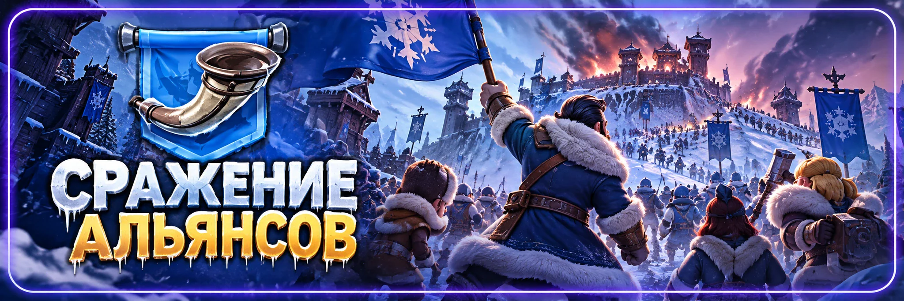

Сражение альянсов
Автор: SOVA58
Главная задача: взять нужные этапы и не сжечь редкие запасы ради лишнего отрыва.
🎯 Главный принцип
Не нужно выигрывать каждый день любой ценой. Если этап уже уверенно выигран или проигран, лишняя трата ресурсов почти ничего не даёт.
Тратим ровно столько, сколько нужно для победы, остальное сохраняем.
📦 Что не сливать сразу
- универсальные фрагменты героев;
- ускорения;
- огненные и очищенные кристаллы;
- материалы питомцев;
- талисманы и мифрил;
- материалы снаряжения;
- ресурсы экспертов.
Если тот же ресурс нужен для подготовки к СВС, приоритет обычно у СВС.
📊 Как решать, тратить или нет
Перед крупной прокачкой смотрим четыре вещи:
разрыв по очкам → время до конца → ценность этапа → сколько ресурса понадобится дальше.
Большой отрыв в середине дня ещё не гарантия победы: сильный соперник может внести запас под конец.
💬 Опыт игроков
✅ Первый этап часто не форсят. Он стоит только 1 очко.
✅ Универсальный запас держат на финал. Там он может решить сразу 4 очка.
✅ Не гонятся за личным местом, если альянс уже уверенно выигрывает.
✅ Следят за последними минутами. Крупный запас часто вносят перед закрытием этапа.
✅ Совмещают прокачку с другими событиями, чтобы один расход дал награды сразу в нескольких местах.
✅ СВС важнее красивого счёта. Редкие ресурсы сохраняют, если впереди подготовка.
❌ Где чаще всего сливают ресурсы
- делают огромный отрыв на уже выигранном этапе;
- тратят универсальные фрагменты ради рейтинга;
- используют мифрил без необходимости;
- льют ускорения слишком рано;
- пытаются выиграть все шесть этапов подряд.
📢 Быстрая схема
Этап 1: личные награды → смотрим соперника → не переливаем.
Этапы 2–5: выбираем нужные дни → тратим точечно.
Финал: оставшийся универсальный запас → дожимаем 4 очка.
Не выигрываем этапы запасами. Выигрываем их расчётом.